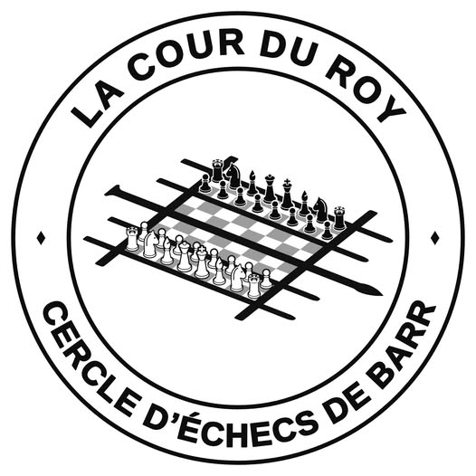

Pédagogie & Stratégie
Cours théoriques clairs, apprentissage des ouvertures, analyse de parties célèbres et exercices tactiques ciblés pour tous les paliers.
Études & Mats →« La Cour du Roy »
Venez apprendre, progresser et partager le plaisir du noble jeu en plein cœur d'Alsace, au milieu des vignes et dans un esprit de convivialité totale.

Plus qu'un simple club, La Cour du Roy est un cercle de passionnés où le dépassement intellectuel rime avec courtoisie, écoute et convivialité.
Cours théoriques clairs, apprentissage des ouvertures, analyse de parties célèbres et exercices tactiques ciblés pour tous les paliers.
Études & Mats →Parties libres amicales, blitz avec pendule, cadence lente et échanges chaleureux autour d'une tisane ou d'un café.
Partage & Détente →Accueil des enfants dès 6 ans jusqu'aux aînés. Du tout premier pion déplacé aux tournois officiels départementaux et régionaux.
Tous âges →Installé au calme à l'École de Musique de Barr. Un environnement studieux, lumineux et apaisant propice à la réflexion et à la créativité.
Cœur de Barr →Les moments de partage et de compétition du club.
Une soirée réunissant petits et grands autour de rondes passionnantes, suivie du traditionnel partage de la galette et de l'analyse des plus belles finales.
Événement du clubBravo à nos jeunes représentants pour leur pugnacité et leur belle attitude sportive lors des rondes départementales !
Championnat JeunesUne simultanée amicale sur 12 échiquiers menée par notre président, suivie d'échanges tactiques et de parties libres dans la salle dédiée.
Simultanée & AnalyseChaque mercredi de 17h30 à 21h00 : cours par paliers et jeu libre en continu.
Découverte ludique des règles, déplacement des pièces et apprentissage des premiers schémas de mat.
Dès 6 ans · Débutants completsÉtude des ouvertures, analyse tactique, principes stratégiques et calcul des variantes pour les jeunes en progression.
Ouvertures, tactique & stratégieCours théorique ciblé, tactiques avancées et perfectionnement stratégique pour les joueurs adultes confirmés.
Perfectionnement & analyses cibléesPendant que les membres n'ont pas cours, ils jouent entre eux dans une autre salle : parties amicales, blitz avec pendule ou analyses en toute convivialité.
Rejoindre une partie →Venez essayer un mercredi soir sans engagement matériel ni financier. Posez-nous vos questions ou prévenez-nous de votre passage.
Formulaire de démonstration : aucune demande n'est envoyée. Pour réserver un essai, appelez le club au numéro ci-dessus.
Rendez-vous mercredi prochain dès 17h30 à l'École de Musique.